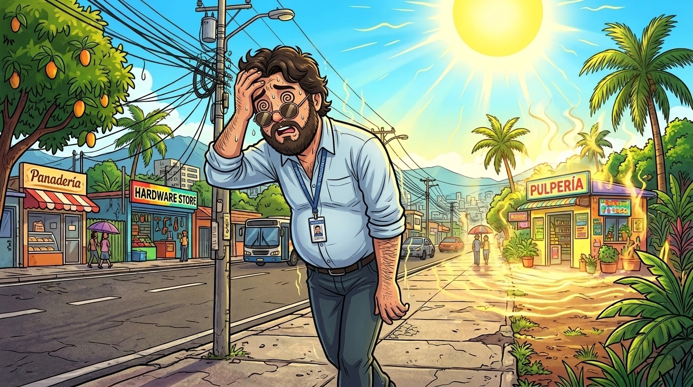
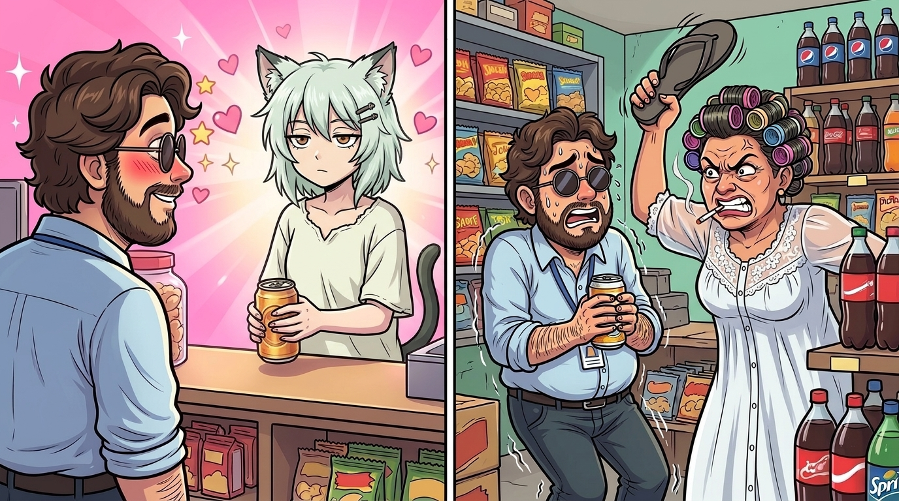
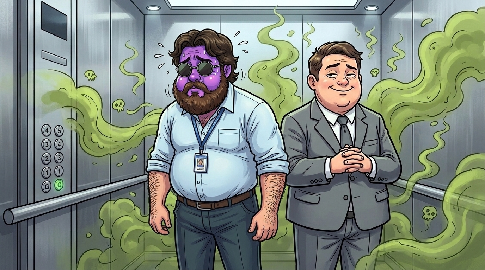
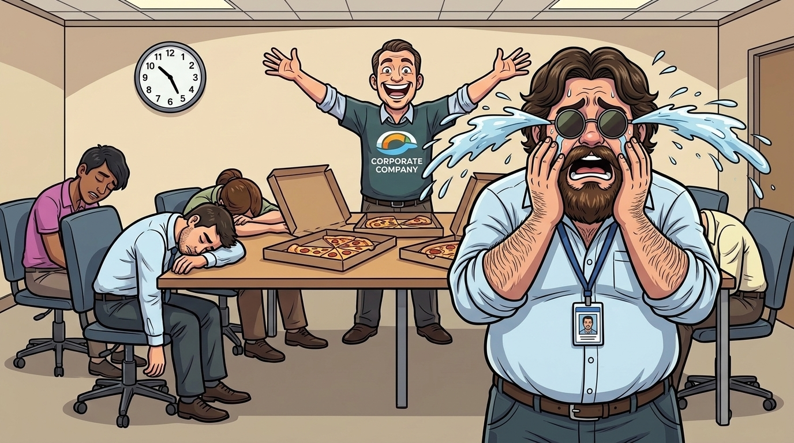

Este Web Cómic está diseñado en formato panorámico 16:9. Para ver las ilustraciones en grande y leer los cuadros de diálogo como en el cine, te recomendamos girar tu celular a modo horizontal (Landscape).
💡 Si tu celular tiene bloqueado el giro automático, actívalo en tu barra de control y voltéalo horizontalmente.
🛸
Crónicas de un Disociado en San Pedro
Un stand-up de Genio Maluco

San Pedro, hora de almuerzo...
¡Uy, qué es este BOCHORNO!
Nivel de disociación: realidad alterada

Expectativa: toda aesthetic ✨
Realidad: cero aesthetic 🩴
Regáleme una cervecita para calmar este caloooorsh...
LUNLevantarse, existir, presa en Circunvalación, trabajar, comer.
MARLevantarse, trabajar, reunión que pudo ser un correo, comer.
MIÉLevantarse, trabajar, comer.
JUELevantarse, trabajar, comer.
VIELevantarse, trabajar, comer... ¡y pegársela hasta borrar casete!
SÁBDormir hasta las 4 p.m. ¿Ayuno intermitente fit? 🤔
DOMGoma moral, misa para limpiar el karma... ¡y vueltaaaa!
⚠ Colaboracionistas detectados: Recursos Humanos
🥼🛸🥼
📱 Zoom modo telescopio: 100x
:(
Tu cerebro tuvo un problema y necesita reiniciarse. Estamos recopilando información sobre el bochorno.
Progreso:
El "platillo volador" era el Archivo Nacional 🫡 · Los de bata blanca eran archivistas almorzando.
Código de detención: SE_ACABO_LA_HORA_DE_ALMUERZO
📄 standup_NO_ES_TRABAJO.docxViernes 3:12 p.m.
Como después de esa abducción al mediodía tenía que ir a trabajar,
y del calor mi mente no paraba de disociar y divagar,
aquel puro me terminé de mandar para al brete llegar a volar.
Cuando iba llegando, lo único que deseaba era que me dejaran trabajar en paz,
pero una dinámica de Recursos Humanos no me iba a dejar jamás.
Vi pasar a la novia del jefe y ni se dignó a saludar...

...al ascensor me subí raudo y veloz,
sin saber que el primo del jefe uno bien hediondo se iba a rajar 💨
¡Mejor por las gradas hubiera subido!

🕓 Viernes, 4:50 p.m.
¡SOMOS UNA GRAN FAMILIA, PÓNGANSE LA CAMISETA... Y AGARREN UN PEDAZO DE PIZZA!
🚩 La mayor red flag de la historia
😭 ¡FIIIIN! 😭
Si van a salir a la hora del almuerzo en San Pedro, no fumen ni beban cerveza... ¡porque se vuelven cuerdooooosss y les toca volver a la oficina... ¡y qué pereza!